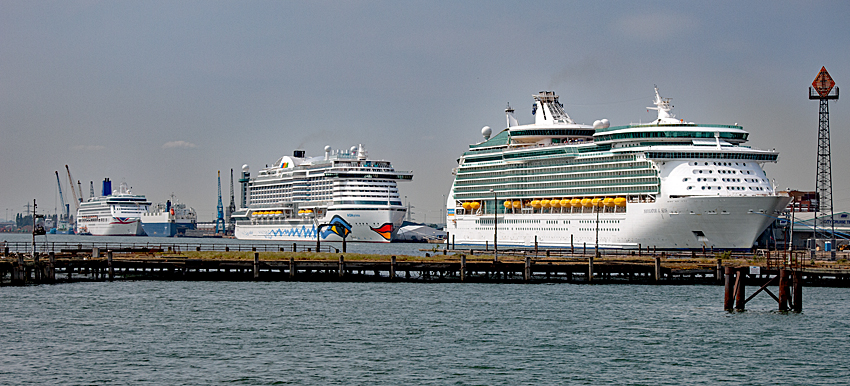

Transportation
Getting to and around Taniti
Getting to Taniti

Photo: Murgatroyd49, Wikimedia Commons, CC BY-SA 4.0.
By air
Almost all visitors arrive by air. Taniti's small airport accommodates small jets and propeller planes, and an expansion is planned so larger jets can land in future years.
By sea
Some visitors arrive on a small cruise ship that docks in Yellow Leaf Bay for one night per week.
Getting around Taniti
- Public buses: Taniti City, 5 a.m.–11 p.m. daily.
- Private buses: Serve the rest of the island.
- Taxis: Available in Taniti City.
- Rental cars: Available from a local agency near the airport.
- Bicycles: Bikes and helmets can be rented; helmets are required by law.
- Walking: Taniti City is flat and walkable, and Merriton Landing is easy to explore on foot.